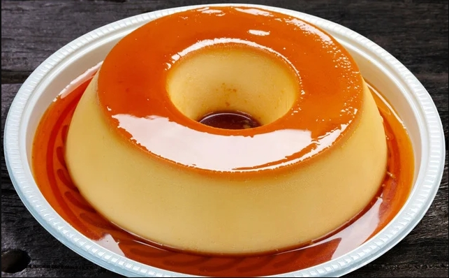

| Receita do Dia! | ||
|---|---|---|
| Receita de Pudim | ||
|
 |
Veja como fazer essa receita de pudim de leite condensado lisinho e com uma calda perfeita de caramelo. | |
Ingredientes |
Modo de Preparo |
|
Pudim Calda |
Pudim Calda |
|
| Bom Apetite! | ||
| Veja mais em Tudo Gostoso! | ||
Integrantes: